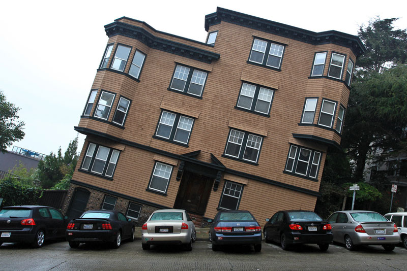
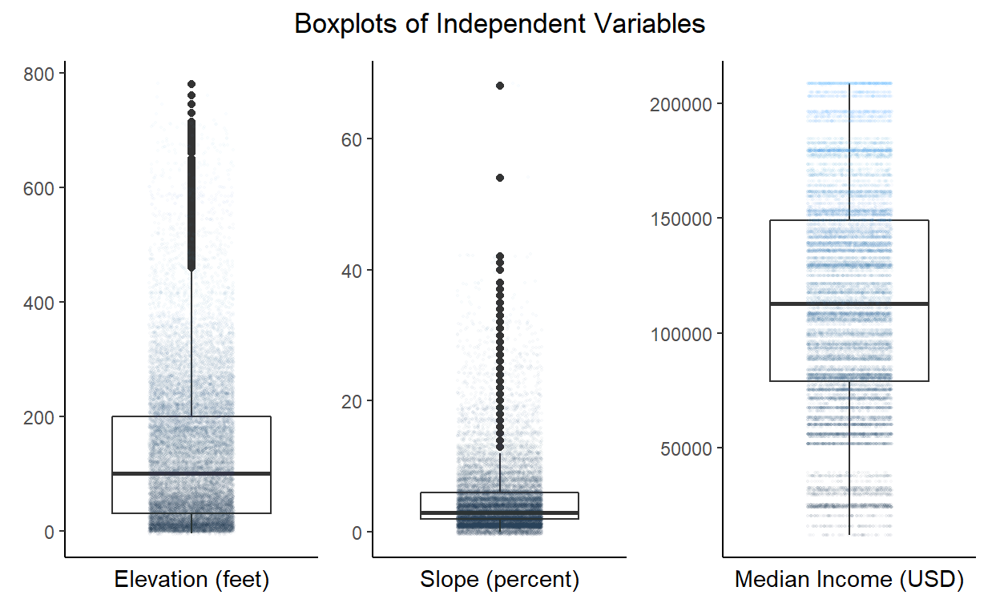
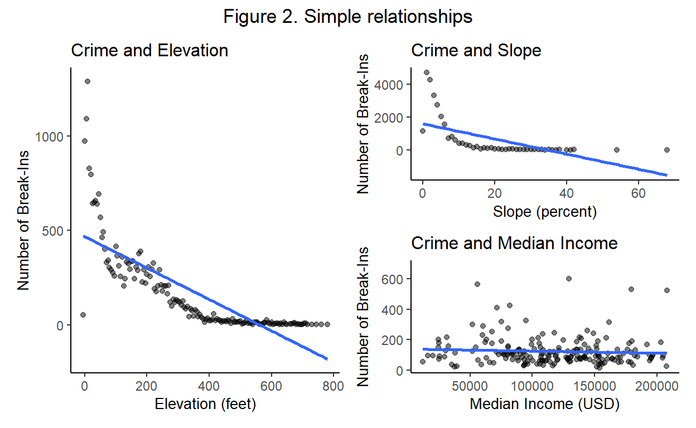
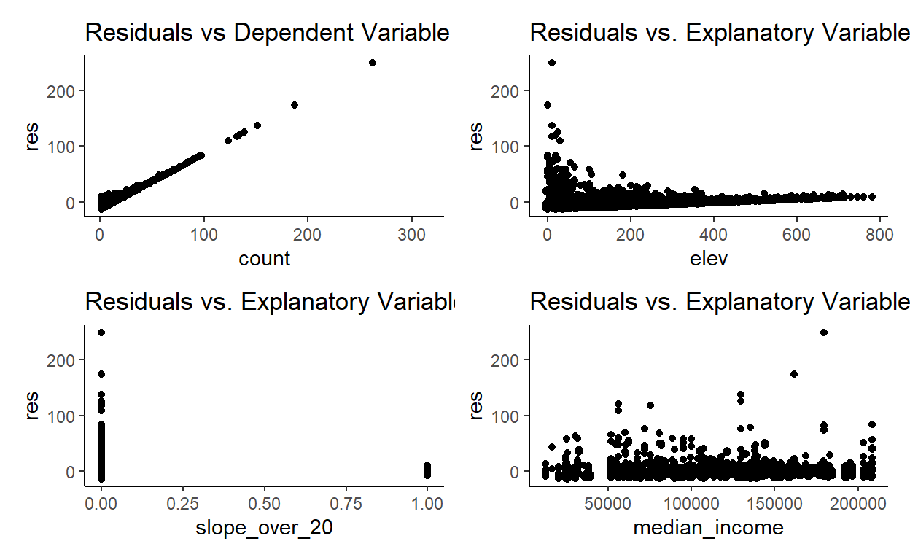
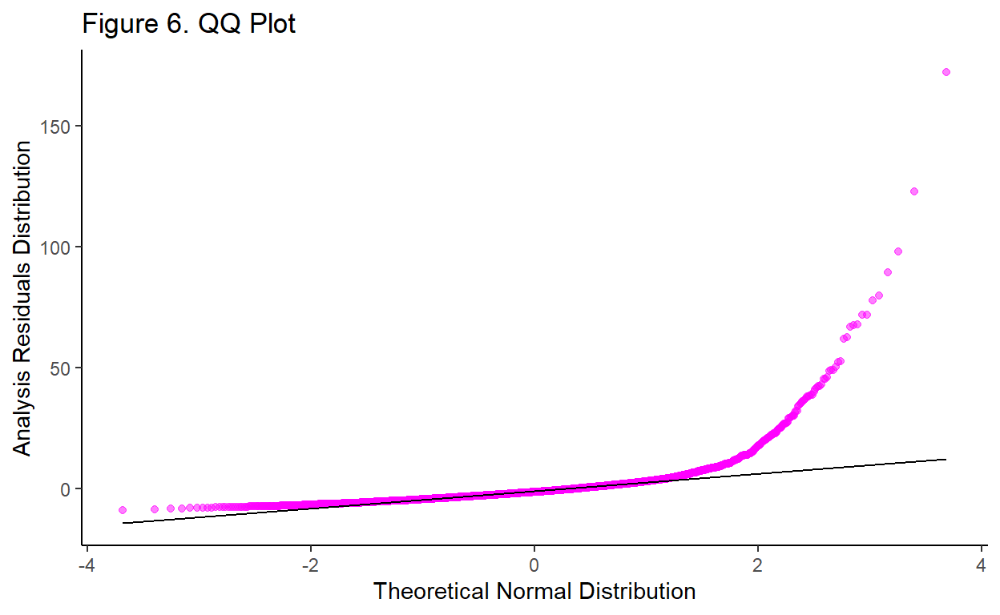
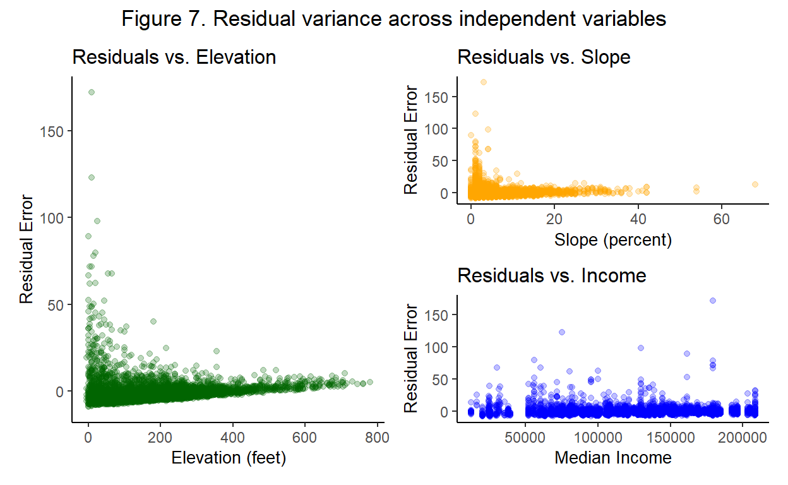

That is one steep street!
Analysis Plan
This analysis will follow the specific steps outlined in Table 1 below:
Show code
data.frame("Step" = c(1:8),
"Description" = c("Identify research question",
"Select key variables",
"Collect data",
"Describe data",
"Visualize relationships",
"Test OLS assumptions",
"Conduct regression analysis",
"Interpret results")) %>%
kable(caption = "Analysis Plan") %>%
kable_paper(full_width = FALSE) %>%
kable_styling(latex_options = "striped",
font_size = 15) %>%
column_spec(1, bold = T) %>%
row_spec(0, bold = T, color = "black")
| Step | Description |
|---|---|
| 1 | Identify research question |
| 2 | Select key variables |
| 3 | Collect data |
| 4 | Describe data |
| 5 | Visualize relationships |
| 6 | Test OLS assumptions |
| 7 | Conduct regression analysis |
| 8 | Interpret results |
1. Research Question
My research question is: What is the relationship between topography and car break-ins in San Francisco?
Background
Both terrain and motor vehicle crimes are ubiquitous when discussing living or visiting San Francisco. In April 2021, Young-An Kim & James C. Wo published Topography and crime in place: The effects of elevation, slope, and betweenness in San Francisco street segments. This study supports the idea that “hilliness” has an effect on crime, taking into consideration socio-economic characteristics Kim and Wo (2021). However, their analysis did not separate by specific crime categories and instead included all types of crime, including violent, nonviolent, property, etc.
My analysis will focus only on car break-ins rather than all crime reports, as I believe that these crimes will have a more significant relationship with topography. In addition, my analysis will use more recent crime report and socio-economic data sets. Understanding the relationship between topography and car break-ins can influence local-level policy decisions and direct limited resources dedicated to crime prevention. For example, the city could focus enforcement and policy on areas within certain elevation and slope ranges that are identified in this analysis as being particularly susceptible to car break-ins.
2. Select key variables
Table 2 below contains the key measures of interest in our analysis:
Show code
data.frame("Dependent Variable" = c("Number of Car Break-Ins", ""),
"Independent Variables" = c("Elevation", "Slope"),
"Control Variable" = c("Median Income","")) %>%
kable(col.names = c("Dependent Variable", "Independent Variables", "Control Variable"), caption = "Key variables for regression analysis") %>%
kable_paper(full_width = FALSE) %>%
kable_styling(latex_options = "striped",
font_size = 15) %>%
column_spec(1, bold = T) %>%
row_spec(0, bold = T, color = "black")
| Dependent Variable | Independent Variables | Control Variable |
|---|---|---|
| Number of Car Break-Ins | Elevation | Median Income |
| Slope |
When discussing topography, both elevation and slope are necessary for inclusion because these two capture the effect of local level topography. In any econometric analysis, it is vital to control for socio-economic variables. Thus, median income is included as a control variable.
Here is the regression equation:
\[NumBreakIns_i = \beta_0 + \beta_1Elevation_i + \beta_2Slope_i + \beta_3MedianIncome_i + u_i\]
Based on the existing literature by Kim & Wo, it is expected that there is a negative correlation between number of car break-ins and all three independent variables.
3. Collect data
- Crime (City and San Francisco (2021))
- Retrieved from the San Francisco Open Data Portal
- All crime reports from 2018-01-01 to 2021-11-04.
- Queried to only include “Motor Vehicle Theft”
- Locations are aggregated to closest street intersections.
- Elevation contours (City and San Francisco (2021))
- Retrieved from the San Francisco Open Data Portal
- 5 ft. elevation contours
- Used directly for elevation and also to derive slope through a geo-processing workflow in QGIS with GRASS (see this video for details on this process).
- Median income (Walker (2021))
- Retrieved through the
tidycensuspackage via the US Census Bureau. - census Tract detail level from the 5-year 2015-2019 ACS data.
- Retrieved through the
Since our variables interact over space, we merge the crimes, topography, and median income data sets by spatially joining them together. All data sets are loaded into R as shapefiles in the Coordinate Reference System (CRS) EPSG:7132 (NAD83(2011) / San Francisco CS13 (ftUS)), which is a projected CRS for the city and county of San Francisco adequate for high-precision (0.03 ft) analysis.
4. Describe data
The summary statistics for the data are provided in Table 3 below.
Show code
crimes %>%
#st_drop_geometry() %>%
select(slope, elev, median_income) %>%
psych::describe(fast=TRUE) %>%
kable(col.names = c("", "Count", "Mean", "SD", "Min", "Max", "Range", "SE"), caption = "Summary statistics for Slope, Elevation, and Median Income variables") %>%
kable_paper(full_width = FALSE) %>%
kable_styling(latex_options = "striped",
font_size = 15) %>%
column_spec(1, bold = T) %>%
row_spec(0, bold = T, color = "black")
| Count | Mean | SD | Min | Max | Range | SE | ||
|---|---|---|---|---|---|---|---|---|
| slope | 1 | 24454 | 4.492966 | 4.793824 | 0 | 68 | 68 | 0.0306554 |
| elev | 2 | 24454 | 129.321379 | 120.439659 | -5 | 780 | 785 | 0.7701841 |
| median_income | 3 | 23764 | 114039.269567 | 47501.416992 | 12340 | 208425 | 196085 | 308.1390882 |
We can see in the count column that there are 24,454 total break-ins in our data, with some missing values for median income. The slope ranges from 0 to 68 percent (~34 degrees) with a mean value of approximately 4.5 percent. This indicates that there are vastly more break-ins on flatter streets as expected. The elevation ranges from -5 to 780 feet with a mean value of approximately 130 (note: negative values are a result of attaching the nearest contour level to crimes very close to the coastline). Again, there are more break-ins at lower elevations than higher. The median income ranges from ~$12,000 to ~$208,000 with a mean value of approximately $114,000. This indicates that our median income data appears to be somewhat evenly distributed.
The box plots below visualize these observations:
Show code
slope_box <- ggplot(data = crimes_summary, aes(x = "", y = slope)) +
geom_boxplot(color = "orange") +
geom_jitter(aes(color = slope),
width = 0.2,
size=0.4,
alpha=0.1,
show.legend = FALSE) +
theme_classic() +
theme(axis.text.x = element_blank(),
axis.ticks.x = element_blank(),
axis.title.y = element_blank()) +
labs(x = "Slope (%)")
elev_box <- ggplot(data = crimes_summary, aes(x = "", y = elev)) +
geom_boxplot(color = "darkgreen") +
geom_jitter(aes(color = elev),
width = 0.2,
size=0.4,
alpha=0.1,
show.legend = FALSE) +
theme_classic() +
theme(axis.text.x = element_blank(),
axis.ticks.x = element_blank(),
axis.title.y = element_blank()) +
labs(x = "Elevation (feet)")
income_box <- ggplot(data = crimes_summary, aes(x = "", y = median_income)) +
geom_boxplot(color = "blue") +
geom_jitter(aes(color = median_income),
width = 0.2,
size=0.4,
alpha=0.1,
show.legend = FALSE) +
theme_classic() +
theme(axis.text.x = element_blank(),
axis.ticks.x = element_blank(),
axis.title.y = element_blank()) +
labs(x = "Median Income (USD)")
elev_box + slope_box + income_box + plot_annotation(title = 'Figure 1. Distributions of Independent Variables',
theme = theme(plot.title = element_text(hjust = 0.5)))

The box plots more clearly demonstrate that both elevation and slope have more occurrences at low values than high values, with high outliers. These extreme values appear to be accurate - the highest peak in San Francisco is Mount Davidson at 938 feet and the steepest surveyed road is Bradford Street at 41% grade. This indicates that two of the slope outliers are likely due to data artifacts.
The following maps visualize the four variables:

Visualizing the spatial distribution of crime data in relation to the distributions of the three independent variables (elevation, slope, and median income).
5. Visualize relationships
The following plots in Figure 2 show the simple relationships between count of car break ins and the three independent variables (elevation, slope, and median income).
Show code
# Group by income
income_summary <- crimes %>%
#st_drop_geometry() %>%
group_by(median_income) %>%
summarize(count = n())
income_plot = ggplot(data = income_summary, aes(x = median_income, y = count)) +
geom_point(alpha = 0.5, color = "darkgreen") +
geom_smooth(method = "lm", se = FALSE) +
theme_classic() +
labs(title = "Crime and Median Income",
x = "Median Income (USD)",
y = "Number of Break-Ins") +
theme(title = element_text(size = 10))
# Group by elevation
elev_summary <- crimes %>%
#st_drop_geometry() %>%
group_by(elev) %>%
summarize(count = n())
elev_plot <- ggplot(data = elev_summary, aes(x = elev, y = count)) +
geom_point(alpha = 0.5, color = "orange") +
geom_smooth(method = "lm", se = FALSE) +
theme_classic() +
labs(title = "Crime and Elevation",
x = "Elevation (feet)",
y = "Number of Break-Ins") +
theme(title = element_text(size = 10))
# Group by slope
slope_summary <- crimes %>%
#st_drop_geometry() %>%
group_by(slope) %>%
summarize(count = n())
slope_plot <- ggplot(data = slope_summary, aes(x = slope, y = count)) +
geom_point(alpha = 0.5, color = "blue") +
geom_smooth(method = "lm", se = FALSE) +
theme_classic() +
labs(title = "Crime and Slope",
x = "Slope (percent)",
y = "Number of Break-Ins") +
theme(title = element_text(size = 10))
elev_plot + (slope_plot / income_plot) + plot_annotation(title = 'Figure 2. Simple relationships',
theme = theme(plot.title = element_text(hjust = 0.5)))

There is a negative correlation between elevation and crime. It also appears that this relationship is not linear, so the model may fit better if transformed. Additionally, there is a negative correlation between slope and crime also showing signs of a non-linear relationship, supporting the justification for a transformation. Lastly, there appears to be a weak negative correlation, or even possibly no significant relationship, between median income and car break-ins.
6. Test OLS Assumptions
In order to appropriately utilize an Ordinary Least Squares (OLS) regression model, the following set of key assumptions should be met:
- The population relationship is linear in parameters with an additive disturbance.
- Our \(X\) variables are exogenous, i.e., \(\mathop{\boldsymbol{E}}\left[ u \mid X \right] = 0\).
- The \(X\) variables have variation.
- The population disturbances \(u_i\) are independently and identically distributed as normal random variables with mean zero \(\left( \mathop{\boldsymbol{E}}\left[ u \right] = 0 \right)\) and variance \(\sigma^2\) (i.e., \(\mathop{\boldsymbol{E}}\left[ u^2 \right] = \sigma^2\))
For the purpose of this analysis, Assumption #1 holds because the relationships observed in Figure 2 appear linear in parameters. Additionally, this analysis claims that Assumption #2 holds. Assumption #3 holds because the \(x\) variables have variation as shown in Figures 1 and 2.
Below, Assumption #4 is tested by generating the residuals from the main regression equation and to assess all components. The distribution of residuals is shown in Figure 5. below:
Show code
crime_lm <- crimes_summary %>%
add_predictions(model = lm(count ~ elev + slope + median_income, data = crimes_summary)) %>%
mutate(res = count - pred)
ggplot(data = crime_lm, aes(x = res)) +
geom_histogram(binwidth = 5, fill = "darkblue", col = "black") +
labs(title = "Figure 5. Residual Plot",
x = "Residuals",
y = "Count") +
theme_classic()

The residuals do not appear to be normally distributed because there is a long right tail. This indicates that the model is over-estimating the dependent variable for certain values of the independent variables.
Next, Figure 6 shows a QQ plot of the distribution, which visualizes the normality of the residuals.
Show code
ggplot(data = crime_lm, aes(sample = res)) +
geom_qq(alpha = 0.5, color = "magenta") +
geom_qq_line() +
theme_classic() +
labs(title = "Figure 6. QQ Plot",
x = "Theoretical Normal Distribution",
y = "Analysis Residuals Distribution")

The QQ plot indicates that the residuals are relatively normally distributed for values up to approximately 2 on the theoretical normal distribution. This supports the conclusion from Figure 5 that the model residuals are not normally distributed for high values.
Lastly, Figure 7 tests whether the residuals appear to have constant variance when plotted against our independent variables.
Show code
y1 <- ggplot(data = crime_lm, aes(x = elev, y = res)) +
geom_point(alpha = 0.25, color = "darkgreen") + theme_classic() +
labs(title = "Residuals vs. Elevation",
x = "Elevation (feet)",
y = "Residual Error") +
theme(title = element_text(size = 10))
y2 <- ggplot(data = crime_lm, aes(x = slope, y = res)) +
geom_point(alpha = 0.25, color = "orange") + theme_classic() +
labs(title = "Residuals vs. Slope",
x = "Slope (percent)",
y = "Residual Error") +
theme(title = element_text(size = 10))
y3 <- ggplot(data = crime_lm, aes(x = median_income, y = res)) +
geom_point(alpha = 0.25, color = "blue") + theme_classic() +
labs(title = "Residuals vs. Income",
x = "Median Income",
y = "Residual Error") +
theme(title = element_text(size = 10))
y1 + (y2 / y3) + plot_annotation(title = 'Figure 7. Residual variance across independent variables',
theme = theme(plot.title = element_text(hjust = 0.5)))

It does not appear that the residuals have constant variance for the independent variables. The plots for elevation and slope have higher variance for lower values and all three plots do not appear to be centered at 0. Therefore, it is likely that Assumption #4 is violated.
Since Assumptions #1, #2, and #3 appear to be satisfied, in this case using OLS is an unbiased estimator of the coefficients. However, Figures 5-7 provide sufficient concern that Assumption #4 is not satisfied and therefore OLS may not be the estimator with lowest variance. An alternative estimator to OLS may provide estimates of the true population parameters with less variance. The analysis will continue using OLS while taking this into account as a limitation for the interpretation of results.
7. Regression Analysis
Model 1
Below are the results of the OLS regression analysis for the original equation, which is repeated below:
\[NumBreakIns_i = \beta_0 + \beta_1Elevation_i + \beta_2Slope_i + \beta_3MedianIncome_i + u_i\]
Show code
| Observations | 4391 (23 missing obs. deleted) |
| Dependent variable | count |
| Type | OLS linear regression |
| F(3,4387) | 151.4730923 |
| R² | 0.0938608 |
| Adj. R² | 0.0932411 |
| Est. | S.E. | t val. | p | |
|---|---|---|---|---|
| (Intercept) | 10.1472401 | 0.3589623 | 28.2682638 | 0.0000000 |
| elev | -0.0139627 | 0.0009376 | -14.8922804 | 0.0000000 |
| slope | -0.1468949 | 0.0213511 | -6.8799698 | 0.0000000 |
| median_income | -0.0000094 | 0.0000027 | -3.4337539 | 0.0006008 |
| Standard errors: OLS |
First, the coefficients can be interpreted from the summary above:
- Intercept: When elevation, slope, and median income are equal to \(0\), the expected average number of car break-ins is ~10.15.
- Elevation: With all else constant, for a 1 foot increase in elevation, there is a ~0.014 decrease in the number of break-ins.
- Slope: With all else constant, for a 1 percent increase in slope, there is a ~0.15 decrease in the number of break-ins.
- Median Income: With all else constant, for a $1 increase in USD, there is a ~0.00001 decrease in the number of break-ins (more intuitively, a $10,000 increase has an expected decrease in break-ins of 0.1).
Next, we can interpret the significance of these coefficients using the p-value. For all independent variables, the p-value is less than 0.001 indicating that each of the independent variables have a significant effect.
Lastly, the \(R^2\) value of approximately 0.09 indicates that ~9% of the variance in number of break-ins is accounted for in the model. This is an expectedly low result, as crime is most likely going to be related to many other socio-economic and demographic factors that were not considered in this analysis, such as population density, racial composition, land use, etc. However, this analysis singles out the possible effects of topography.
Model 2: Logarithmic transformation of dependent variable
It is also important to compare the results of the OLS analysis with an alternative regression equation. In earlier sections, it was identified that the relationship of both elevation and slope with break-ins appeared to be non-linear. Therefore, it could be appropriate to transform the equation. The equation and summary below demonstrate the different results when log-transforming the dependent variable.
\[log(NumBreakIns_i) = \beta_0 + \beta_1Elevation_i + \beta_2Slope_i + \beta_3MedianIncome_i + u_i\]
Show code
| Observations | 4391 (23 missing obs. deleted) |
| Dependent variable | log(count) |
| Type | OLS linear regression |
| F(3,4387) | 247.6027651 |
| R² | 0.1448023 |
| Adj. R² | 0.1442175 |
| Est. | S.E. | t val. | p | |
|---|---|---|---|---|
| (Intercept) | 1.8826251 | 0.0391027 | 48.1456352 | 0.0000000 |
| elev | -0.0019118 | 0.0001021 | -18.7187543 | 0.0000000 |
| slope | -0.0211530 | 0.0023258 | -9.0948218 | 0.0000000 |
| median_income | -0.0000014 | 0.0000003 | -4.6866190 | 0.0000029 |
| Standard errors: OLS |
The \(R^2\) value for Model 2 of 0.145 is higher than the previous \(R^2\) of 0.09 for Model 1. This indicates that a transformation may be a better model fit for the data.
Model 3: Transformation of independent variables
Another method of transforming the regression equation to deal with non-linear relationships is to log-transform the two independent variables, slope and elevation, which appeared to have non-linear relationships with break-ins.
\[NumBreakIns_i = \beta_0 + \beta_1*log(Elevation_i) + \beta_2*log(Slope_i) + \beta_3MedianIncome_i + u_i\]
Show code
crimes_transformed <- crimes_summary %>%
mutate(elev = case_when(elev == -5 ~ 0,
TRUE ~ elev)) %>%
mutate(elev_shift = elev + 0.01,
slope_shift = slope + 0.01)
model_indeptransformed <- lm(formula = count ~ log(elev_shift) + log(slope_shift) + median_income, data = crimes_transformed)
summ(model_indeptransformed, digits = 7)
| Observations | 4386 (28 missing obs. deleted) |
| Dependent variable | count |
| Type | OLS linear regression |
| F(3,4382) | 261.0966098 |
| R² | 0.1516449 |
| Adj. R² | 0.1510641 |
| Est. | S.E. | t val. | p | |
|---|---|---|---|---|
| (Intercept) | 17.7185565 | 0.5031256 | 35.2169636 | 0.0000000 |
| log(elev_shift) | -2.0309857 | 0.0938373 | -21.6437008 | 0.0000000 |
| log(slope_shift) | -0.6512207 | 0.0956560 | -6.8079447 | 0.0000000 |
| median_income | -0.0000128 | 0.0000026 | -4.9423452 | 0.0000008 |
| Standard errors: OLS |
The \(R^2\) value for Model 3 of 0.148 is slightly higher still than Model 2, with all coefficients still similarly statistically significant.
8. Interpret Results
In conclusion, the linear regression model predicts that there are significant negative relationships between the key independent variables (slope and elevation) and the dependent variable (number of car break-ins). While there is a statistically significant relationship with median income, the effect size is seemingly negligible. It was also found that transformations result in better model fit because the non-linear relationships are more accurately taken into account.
The study found that certain assumptions of OLS were violated, meaning that the OLS method is most likely not the estimator with lowest variance. This needs to be taken into account while interpreting the resulting coefficients of the variables.
This analysis has room for improvement, including but not limited to:
Ensuring that the OLS assumption violation is solved by the transformation of the data or by using another estimator.
Including key socio-economic and demographic variables with more significant correlation than median income.
More thoroughly researching and selecting the proper transformation method.
All code for this analysis can be found on GitHub.